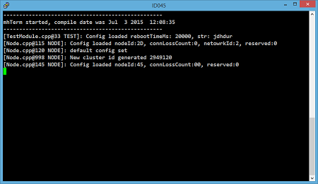

Quick start

FruityMesh was built with Eclipse and GCC and is mainly written in C, with some small C11 bits. Setting up the development environment has become pretty straightforward.
You have two possibilities:
-
Flashing the precompiled firmware will take you about 5 minutes.
-
If you want to compile it yourself you need to Setup Eclipse and compile FruityMesh yourself. This will take you a few more minutes until everything is ready to go.
Flashing the precompiled firmware
The precompiled firmware can be flashed in three easy steps.
1. Download the nRF5 Command Line Tools
The nRF Command Line Tools are handy for flashing the compiled firmware on a device. You can download them here for the operating system of your choice and install them:
The tools come with a bundled installation of the Segger Utilities, which are necessary for flashing and debugging nRF Hardware.
You should add the bin/ folder of the installation to your operating system PATH variable to make development easier.
2. Flash the SoftDevice and the Application
Plug in your nrf51 or nrf52 development board via USB, then open a command prompt in the FruityMesh folder and type in the following command for flashing the nrf51 version:
C:/<path_to_nrfjprog>/nrfjprog.exe --chiperase --program binary/fruitymesh_nrf51_s130.hex --reset
or the following for nrf52:
C:/<path_to_nrfjprog>/nrfjprog.exe --chiperase --program binary/fruitymesh_nrf52_s132.hex --reset
Your output should look like this:

If you have multiple boards attached, you will be prompted for the id of your board that should be flashed.
3. Get started
You’re now ready to test FruityMesh. Continue by reading the Get Started section.
Setup Eclipse and compile FruityMesh yourself
FruityMesh is built using the GCC compiler toolchain together with GNU make. The installation process varies a little for each operating system.
1. Installing the Toolchain
GNU ARM Embedded Toolchain
Download Version 4.9 of the GNU ARM Embedded Toolchain for Windows. This includes the compiler gcc, linker, and multiple utilities like objcopy, addr2line and gdb - the GNU debugger:
Unzip the downloaded package into a folder of your choice.
| Do not choose a newer version, as this might fail to compile. |
Make Tools Installation (Windows only)
Next, if you are working on windows, you have to download and install some unix utilities, the GNU ARM Eclipse Build Tools. This includes make, sh, rm and some others. Version 2.4 has been tested successfully and the executable installer can be downloaded from here:
Because most makefiles will also use the mkdir command and maybe some others, you should also download the GNU Coreutils that provide a set of UNIX commands in binary for Windows. Copy at least the mkdir.exe and md5.exe to the bin/ folder of your GNU ARM Build Tools installation. You must also download the dependencies and copy these to the same folder (Two .dll files).
Binaries:
Dependencies:
Finally, you should add the bin folders of the gnu buildtools and the bin folder of gcc-arm-embedded to your PATH variable under System Environment. This will make sure that you can access these tools from anywhere.
Configure the Project
The last step, before you can build the project is to duplicate Makefile.local.template and name it Makefile.local
Open Makefile.local and give the correct path to your gcc installation:
FRUITYMESH_GNU_INSTALL_ROOT := C:/<path_to_gcc-arm-embedded-4.9>
You can also specify the PLATFORM (NRF51 or NRF52) and give a different Featureset for the build.
Next, open a command prompt in the fruitymesh folder and type:
make
If everything was set up correctly and the location of make was correctly entered in the PATH variable of your operating system, everything should build.
If you installed the nRF Command Line Tools and properly configured the PATH, you can now type:
make flash
to flash the firmware on a device.
Using Eclipse for Development

Eclipse is a good development IDE for FruityMesh. The project settings are already included and all you have to do is download GNU MCU Eclipse, which already contains the necessary plugins for Embedded Development from here:
After starting Eclipse, all you have to do is to import the FruityMesh project. You can then develop, flash and debug in a comfortable way.
Get started
Now, let’s see how we can use FruityMesh. The preconmpiled firmware and the standard project settings are configured so that all devices immediately connect to each other. Start by plugging in your first develoipment kit.
Open a Serial Terminal and Connect
(On Windows, Putty is the best tool. The screen utility can be used on macOS or Linux.) You have to connect to UART using the following settings:
-
Connection Type: Serial
-
Speed: 1000000
-
Data bits: 8
-
Stop Bits: 1
-
Parity: None
-
Flow control: RTS/CTS (Hardware)
Note to OSX users: To find out which serial port to open, you can list all devices under /dev/cu.* and pick the one that says usbmodem.
Reset the Development Kit
Once your terminal is connected to the serial port, press the reset button on the Development Kit and the Terminal should provide you with some output similar to this:

If you don’t get output immediately it will sometimes help to disconnect the Devkit from USB for a short time or try to write something. This is an issue of the SEGGER Debugger chipset that bridges the UART.
Try Some Commands
You may now enter a number of commands to trigger actions. Here are some important ones:
-
status: will show you the status of the node and its connections
-
reset: performs a system reset
-
data: sends data through the mesh that other nodes will output to the terminal
Connect a Second Development Kit
Next, flash and connect another node to the network and you should observe that they connect to each other after a short amount of time. You’ll see that the LEDs will switch from blinking red to a single green pattern.
-
If you enter the command action 0 io leds on, both nodes should switch their led to white (all LEDs on). After you enter action 0 io leds off, it will go back to connection signaling mode.
-
Now, connect with another Terminal to the second Node and enter data in the command prompt and observe how the data is sent to the other node and outputted on the other terminal.
-
You can add as many nodes as you like to the network and see how it reacts. If you remove a node, the network will try to repair this connection. You can observe the size change of the cluster by entering status from time to time.
| Two nodes will only connect to each other once they have been enrolled in the same network. The github configuration will automatically have all nodes enrolled in the same network after flashing. If you do not want this, take a look at the UICR configuration. |
What’s next
Take a look at the Features page for a detailed overview of the possibilities and check out Usage for usage instructions. If you’re ready to contribute to the development of FruityMesh, see Developers for a roadmap and for instructions on how to take part.
If you want to start programming with FruityMesh, you should definitely have a look at the Tutorials page for some guided introduction.